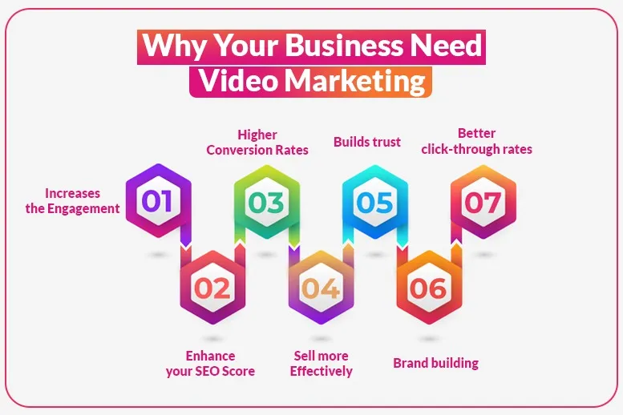

In an interview to Steve Jobs and Bill Gates, a journalist asked them that what from
today’s generation you won’t give to your 12–year–old son. And, the answer will
shock you – Steve Jobs replied, “Tab & iPhone” and same Bill Gates replied, “Phone &
a computer”.
Now, imagine when the whole of the baby boomer generation, Gen X, Millennials, Gen Z, and
even the Gen Alpha are just on phone circumference with Influencers, Ads, and Videos of
every kind then how do you think the Video Marketing can’t affect your ROI?
Now, let’s discuss How?
In 2025, the video content is not just about following the trends but it works like the
digital currency that provides numbers – engagement, reach, brand loyalty, and even
conversions.
Be a small startup or be a multinational giant, the real value lies in the video content
form. These days users have become visual beings and thus, video is racing to be the
“Language of the Internet”. It has also been proven that video content are very easier
to remember than text posts.
What types of videos work best for businesses in 2025?
In 2025, let’s talk about which video types performed well? So, here they are:
- Short-form videos - Short-form videos are concise, engaging content
often set to music, typically under 60 seconds long.
- Behind-the-scenes - Consumers love getting a backside look at the
brands they follow. Behind-the-scenes content builds originality and connects the
audience to your company’s culture and values.
- Mute Videos- At different social media platforms auto-playing
videos without sound that is called mute videos with subtitles are coming into race.
They are optimized for quick consumption and can express key messages effectively
even without audio. Users are liking this feature nowadays as these videos carry 0%
disturbance rate.
- Social Media Stories - Temporary content like Instagram Stories,
Facebook Stories, Snapchat Stories, and TikTok videos are perfect for sharing quick
updates, promotions, or engaging users with bite-sized content.
- Tutorials and How-To - Step-by-step video content continues to grow
in popularity. How-to videos help solve problems for customers, positioning your
business as an expert in the field, and help you to understand the basics easily.
- Product Demos (E-Commerce) - For online businesses, product demo
videos are invaluable. They show how a product works, its features, and how it can
benefit the consumer, ultimately driving purchasing decisions.
- Live Streams - Live streaming offers real-time connection with your
audience. Whether it’s a product launch, a Question & Answer session, or company
announcement, live videos help you to create an immediate sense of connection.
- Webinars - Webinars are longer-format educational or promotional
videos at digital platforms. They allow businesses to present expertise on a topic
and interact with viewers in real time.
- User-Generated Content Videos - UGC videos are where your customers
create content featuring your brand or products, provide authenticity and social
proof, and further strengthen the trust and connection with your audience.
- Testimonials & Review Videos - Customer testimonials and product
reviews provide social proof, helping to build trust with potential customers.
Hearing from satisfied customers can strongly influence purchasing decisions.
- AI-Generated Videos - AI is transforming itself into video
production, making it faster and more efficient to create personalized videos at
scale. But these videos are not always more relevant to your brand. So, you need to
do a great job on scripted prompts.
- CGI Ads Videos - CGI allows for highly creative and visually
stunning content, perfect for brands that want to leave a lasting impression. Esp.
useful for product demonstrations, explanation videos, and creating an amazing brand
experience. Want a hoarding for your brand and the suitable prime location is bad.
Don’t worry CGI will cover you all.
- Explainer Videos - Explanations make hard concepts into simpler
forms. The short, simple videos explain your product or service in a more engaging
way. They are great for increasing understanding and interaction.
- Animated Videos - These videos are highly connecting and effective
at simplifying complex ideas. Small and Large Business organizations use animations
for storytelling, tutorials, and to showcase products in a fun and creative way,
which connects a lot of kid audiences as well as the youth too.
How can I create an effective video marketing strategy?
To create an effective video marketing strategy, you need to understand your audience's
needs. First, figure out where they are in the buying process: are they just learning
about your product (Awareness), comparing options (Consideration), or ready to buy
(Decision)? Understanding their stage helps you create relevant videos.
For example, in the awareness stage, they focus on solving their problems and answering
their questions. This understanding is key to making a strategy that works.
In 2025, What should be the effective video marketing strategy?
- Focus on Mobile-First
- Leverage short-form video Platforms like IG Reels, YT shorts, TikTok, etc.
- Prioritize User-Generated Content
- Invest in High-Quality Productions
- Utilize Data Analytics
- Create a consistent Brand Voice
- Engage with Your Audience
- Collaborate with Influencers
Some best tools to measure the success of your video marketing
Developing a video marketing strategy is just the beginning. Measurement is key to any
successful marketing campaign. To create an effective strategy, you must assess to your
video marketing performance. Here, we discuss some best tools that should be used to
measure the success of your videos.
- Platform Analytics – YT analytics, FB & IG Insights
- Video Player Analytics – Vimeo Analytics, Wistia
- Social Media Listening Tools – Brand Watch, Hootsuite, Meltwater, etc.
- Website analytics – Google
- Survey Tools – SurveyMonkey, Type form, etc.
- CRM Software – HubSpot
Now we know the tools to measure video marketing success. With these tools, you can track
your video marketing progress. Using these tools, you need to consider some key metrics
to better understand your video marketing. here we discuss some key metrics to track the
success of your video.
- Views – No. of times the video has been watched.
- Engagement Rate – (Total Engagements/Total Impressions) X 100
- Watch Time – Total Watch Time/ Total Views Count
- Click-Through Rate – (Clicks/Impressions) X 100
- Conversion Rate – (Conversion/Views) X 100
- Audience Retention Rate – (No. of viewers who watched the entire video/Total No. of
Viewers) X 100
- Return of Investment (ROI) – (Net Profit from Video Marketing/Total cost of Video
Marketing) X 100
why business owners need to work on video marketing

“By 2025, a whopping 82% of all internet traffic will
be video. That's right - videos are taking over the digital world.”
Give it a thought, video content can tell a story like a film, showcase your still
product in a beautiful action-thriller form or even help a newlywed daughter to find
tutorials that will help her to settle with in-laws…
Are you a business owner? Then you need the data to decide as “theory can never
create a business’s success”. We know so presenting the data for your
reference:
- Increases the Engagement: You have to trust this that videos are
easily sharable. In fact, we are very much sure you must have forwarded or received
forwarded videos lot more these days. So taking your action count into the reference
we can easily measure that engagement growth will be higher than the expected.
- Enhance your SEO Score: You must be thinking how the videos enhance
the SEO Score but it does. Search engines like Google grade pages with video
content, makes the brand searches easier for the user.
- High Retention: Viewers retain 95% of a message when they watch it
in a video compared to just 10% when reading text or seeing an image.
- Higher Conversion Rates: Including video on landing pages can
increase conversions by up to 80%. This you can test yourself. Put the demo videos
of your brand over your landing page and check the analytics yourself.
- Mobile Optimization: Mobile users like to move their fingers and
thus scrolls rate over video platforms are higher than the still platforms. With
over 75% of global video consumption happening on mobile devices.
Need to start Video Marketing – Have A Concept clear Solution
“Don’t Be on Scrolls. Instead, let your CTAs play the roles.”
Business Owners or the CEOs here’s a free tip for you:
Embrace the video marketing in style and with innovation not just to be like as an
compulsion.
Get the beforemath and after math always ready to be consistent in video formats. Few are
listed below:
- Stay Competitive: To be in the competition is good but also check the relevancy and
relatability score of the video to your brand. You must check this as there are many
video creators now in the market but virality often demands relatability.
- Build Trust and Authority: Video helps humanizing your brand and establishing your
business as an authentic player in the industry. Remember, don’t ignore the video
comment section.
- Wider Audience Reach: Platforms like YouTube, TikTok, and Instagram prioritize video
content, giving you the opportunity to reach a larger audience base who may be just
your Brand Advocates.
- Generate Leads and Conversions: Video can play a pivotal role in driving customer
acquisition, generating leads, and increasing sales conversions.
The process is simple, but maths is tough. So, before shooting and uploading pen down the
methods listed below:
- Define Your Goals: Identification of purpose is very important.
Brainstorm on the type of videos you want to shoot - Is it brand awareness, lead
generation, or customer retention video?
- Select Target Audience Group: Understanding your TAG is the key
utmost necessary step to reach your goal. Create buyer personas to ensure your video
content resonates with the right demographic.
- Right Platforms: Select the most suitable social media channels
where your audience spends the most time according to your Brand’s TAG.
Different platforms work best for different types of content.
- Plan Your Content: Create a content calendar outlining the types of
videos, Video
- content, video ingredients, video elements, and caption and when they’ll be
published. Make sure each video serves a specific purpose or theme in your overall
strategy.
- Focus on Storytelling: Storytelling is a powerful tool in video
marketing. Describe narratives that connect emotionally with your audience and
reflect your brand’s values.
- Optimise for SEO: Use keywords in your video titles, descriptions,
captions and tags to help small and large business owners rank them good in the
search engines and on platforms like YouTube.
Some Brand successful video campaigns.
There are many brands that have mastered the power of video marketing in innovative ways.
Here are a few examples:
- **Nike’s “You Can’t Stop Us” Campaign**:
This motivational video, blending different sports, reinforced the brand's core
values of perseverance and determination.
- **Dove’s “Real Beauty Sketches”**: This campaign
focused on body positivity and encouraged viewers to rethink their self-perception.
GoPro’s User-Generated Content: GoPro built a community
around user-generated videos, through influencer marketing and majorly through video
content.
The Best Video Editing Tools for Business Owners
Many business owners believe that creating high-quality video content requires a big
budget. And sometimes, they're right. But if you're new to business and don't have a
large budget, don't worry. With the help of right tools, you can create your first video
without Spending lots of money.
Here are some top tools for Android and Windows users:
- InShot App(Android): A user-friendly video editing app that’s
great for creating social media content.
- PowerDirector App(Android): A powerful video editor with features
like slow-motion effects, voiceovers, and more.
VN App(Android):- One more application for Video editing in a
professional manner which enhances the video quality, video motion speed, and many
more tools.
- Adobe Premiere Pro (Windows): A professional-grade video editor
perfect for creating high-quality, polished videos.
- Camtasia (Windows): Ideal for creating instructional and tutorial
videos with screen recordings.
How To Produce An Engaging Video Content:
Producing a video and producing engaging video content are two different things. Here, we
share six best tips that will help you to create engaging video content.
- Hook Your Audience Immediately: The first few seconds are critical. Grab attention
with a strong opening statement or visual.
- Keep It Short and Sweet: Shorter videos often perform better, especially on social
media platforms. Aim for 30 seconds to 2 minutes for most content.
- Optimise for Mobile: Ensure your videos look good on mobile devices, as most users
will be watching on their phones.
- Use Subtitles: Many viewers watch videos on mute, so always include subtitles or
captions.
- Include a Call-to-Action: Encourage viewers to take action after watching your
video, whether it’s visiting your website or signing up for a newsletter.
- Test and Iterate: Continuously test different types of video content to see what
works best, and adjust your strategy accordingly. Brands can use video across a
variety of digital channels and formats, including their own website, social media
marketing, programmatic advertising, and more.
Mistakes to Avoid in Video Marketing
Generally, we convert our ideas into videos but they do not reach their ultimate goals.
To understand the loopholes there are a few points to keep in mind while making an
effective video marketing strategy.
Creating effective videos requires careful planning and execution. Here are some
common mistakes that mostly new business owners make while creating/editing
videos:
- Lack of Clear Purpose- A video without a clear goal or message
confuses the audience. Always define the purpose before starting: Is it to inform,
entertain, or promote?
- Poor Audio Quality Viewers are more likely to stop watching if the
audio is unclear or noisy. Invest in a good microphone or ensure a quiet recording
space for better sound quality.
- Bad Lighting Dark or overexposed videos can make it hard for the
audience to focus. Use natural light
or proper lighting equipment to make your video look professional.
- Ignoring the Target Audience If you don’t understand who your
audience is, your video may not resonate with them.
Know your audience's preferences and tailor the content to suit them.
- Too Long or Too Short Length matters. A video that is too long can
lose viewers, while one that is too short may not deliver the message effectively.
Find the right balance to keep viewers engaged.
- Overloading with Information Bombarding viewers with too much
information can overwhelm them. Stick to one or two
key points per video to maintain clarity.
- Not Adding a Call-to-Action (CTA) After watching, your viewers
should know what to do next. Always include a CTA, like
asking them to subscribe, visit your website, or share the video.
- Poor Editing Sloppy editing with unnecessary pauses or bad
transitions can make the video hard to watch. Clean cuts and smooth transitions are
important for a professional finish.
- Ignoring Mobile Users Many people watch videos on mobile devices.
If your video isn’t utilised for mobile viewing,
you could miss out on a large audience.
- Not Promoting the Video Even the best videos won’t perform well if
they’re not promoted. Share your video on social media, blogs, and other platforms
to increase reach.
By avoiding these mistakes, you can create videos that engage and retain your
audience effectively.
The Role of Video Agencies and Freelancers in Video Marketing
Both video agencies and freelancers play a vital role in creating engaging content, but
each brings unique advantages.
Video agencies are great for large businesses needing professional-grade
video production. They offer a complete package, from scripting and storyboarding to
post-production. Agencies have a team of experts, including directors, editors, and
marketers, ensuring the video aligns with the brand’s goals. For example, a
fashion brand might hire an agency to produce high-quality ads that can be used across
multiple platforms like Instagram and YouTube.
Freelancers, on the other hand, are perfect for small businesses or startups that need
budget-friendly yet creative content. Freelancers often bring a personalized approach,
giving more flexibility. For example, a local coffee shop might work with a freelance
videographer to create short, social media-friendly videos showing their daily specials.
In brief, whether you choose a video agency or a freelancer, both of them can help your
business to boost your brand’s image and engagement. Understanding your
business’s needs and budget will guide you toward the right option for your video
marketing strategy.
Videos are ultimately playing an important role in increasing the awareness of
businesses.
Conclusion:-
In 2025, video marketing will be a plot-changer. With personalized,
short-form content, AI-powered tools, and interactive experiences, businesses can
connect with their audience more effectively than ever before.
Platforms like Instagram Reels and YouTube Shorts will dominate, while live streaming and
storytelling will build stronger brand connections. By staying updated on trends and
adapting strategies for mobile-first users, marketers can ensure their content is
shareable, engaging, and optimized for search engines, benefiting both small firms and
big businesses.
Ready to make video marketing work for your business? Contact us today to learn how our
expert team can help.
FAQ's
Video Marketing can be used for businesses in various
forms such as storytelling, promotional ads,
instagram reels and many more which will engage the
target audience and increase the brand awareness of
your product/services on the digital platforms.
Business to Business Video Marketing can be done by
setting a clear video campaign strategy with respect
to various companies and reaching out to them for
collaboration.
From the pool of various techniques ,the most popular
one is Influencer Marketing because the companies
are in collaboration with influencers as they are
the best at creating an impact on your thoughts,
through reviewing products , unboxing videos etc.
It clearly defines creation and promotion of video
contents in such an interactive way for companies to
showcase their products/services which increase
company’s value and expand their reach.